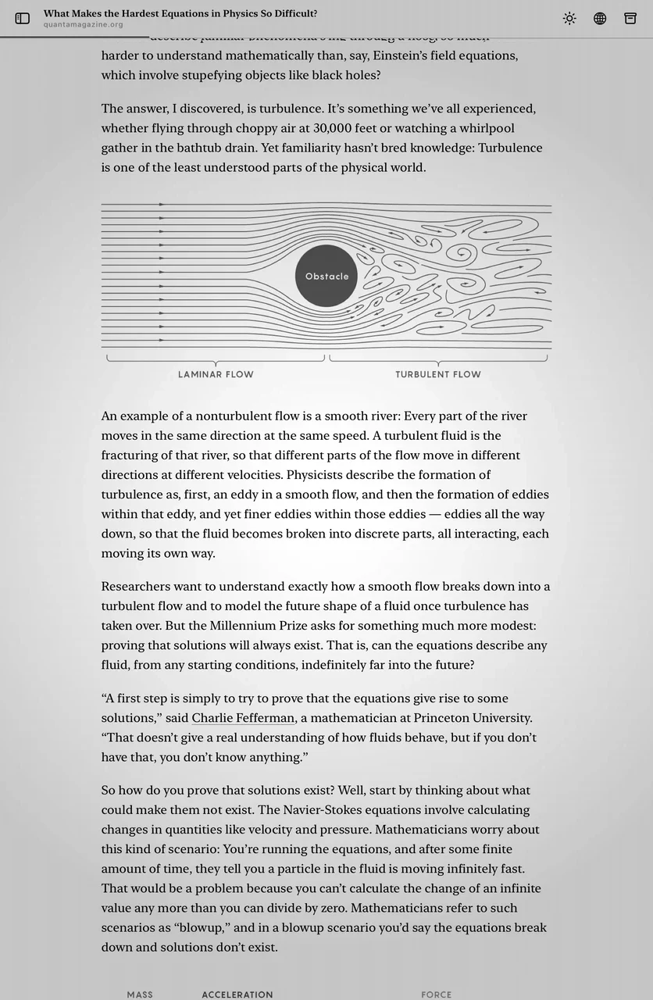
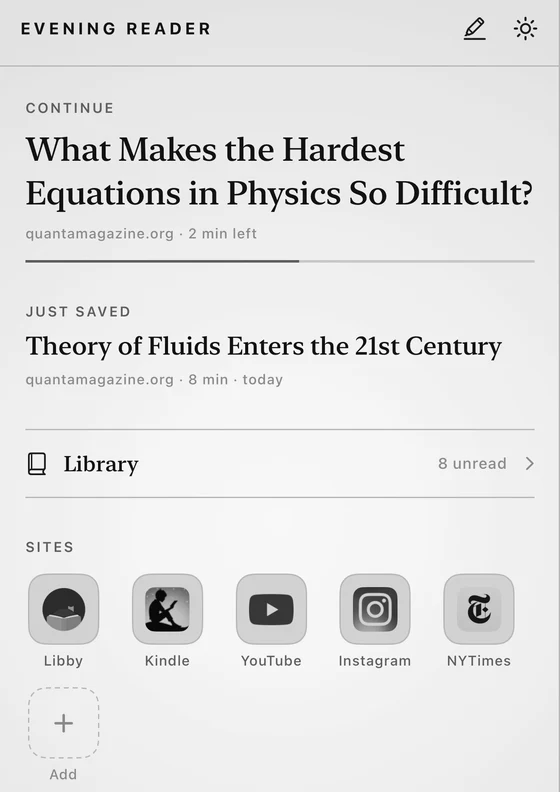
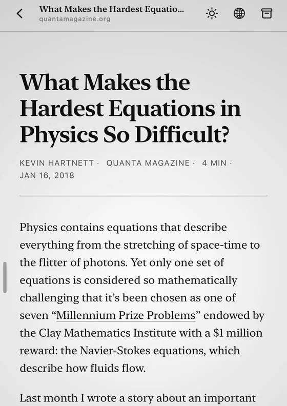
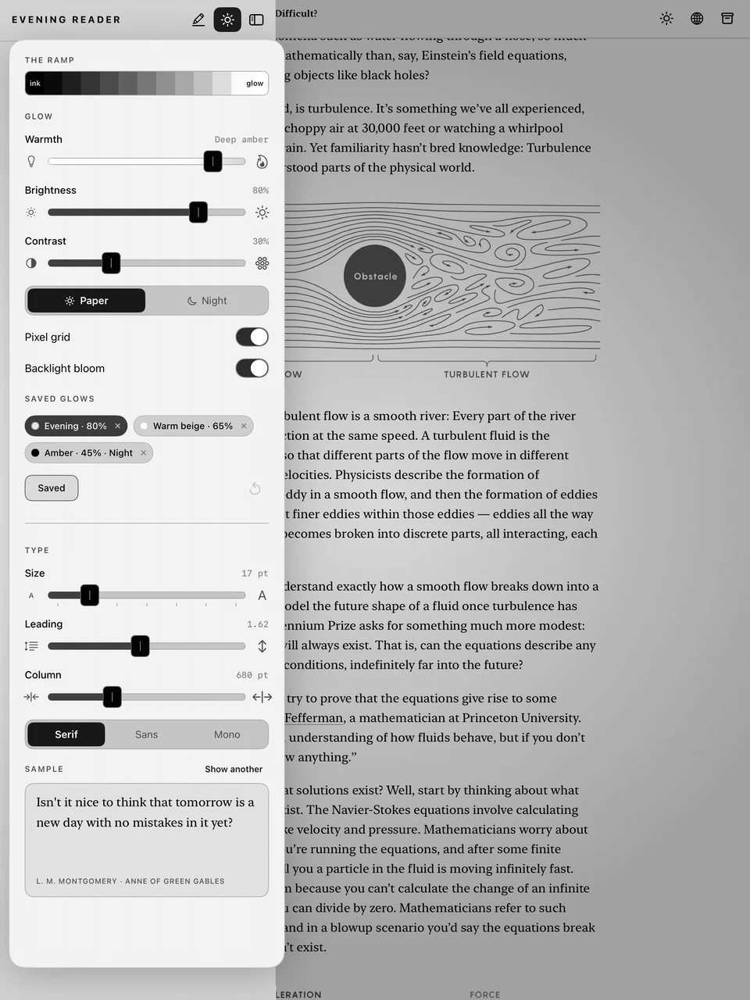
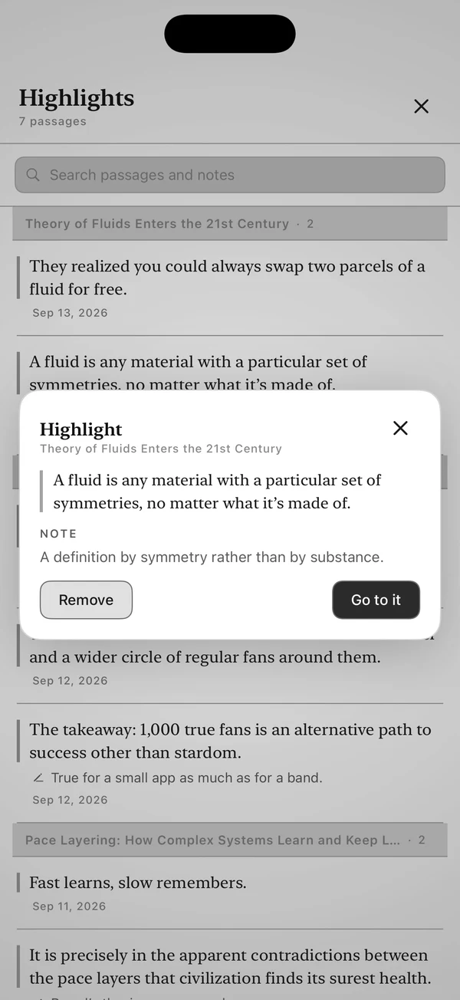
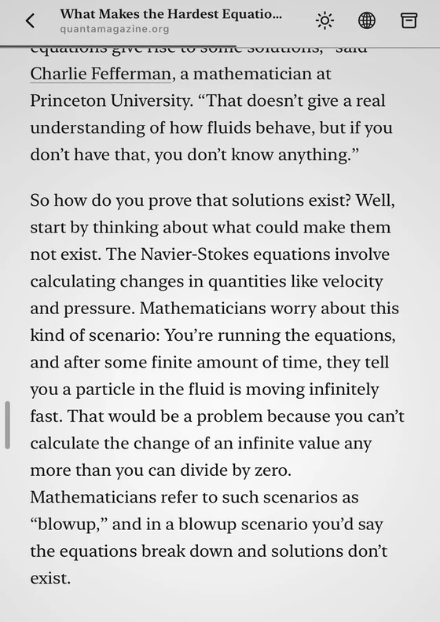
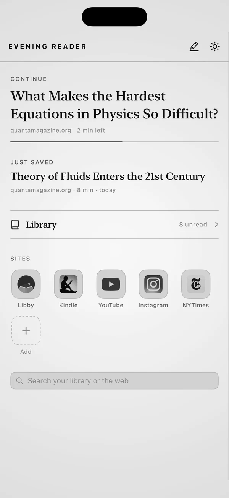
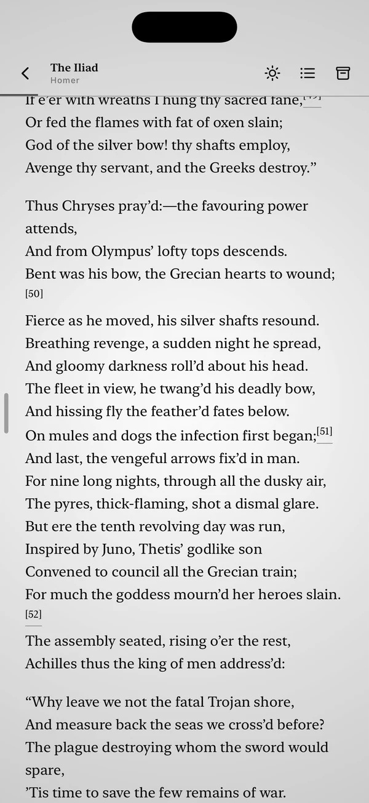

Evening Reader
Soft on the eyes, warmth for the soul.
Save articles, books and PDFs, and read them on a single amber glow you set yourself. Everything you save is kept on the device and in your own iCloud folders.




No blue light, anywhere.
The keyboard, text selection, copy and paste, menus and sheets were all rebuilt by hand in a single color. Nothing on the screen flashes white or blue to pull you out of the page.
- A keyboard drawn in the glow
- Selection, edit menu and paste, rebuilt
- One color from the page to the last button


Saved to read, yours to keep.
Save articles, books and PDFs from the share sheet. Everything is downloaded to read offline, kept as plain files in your own iCloud Drive, and ready to highlight.
- Offline: the text, the pictures, the whole book
- A Markdown note per article, readable in Files, on a Mac or in Obsidian
- Highlights, notes and definitions, gathered on one page

The rest of the internet, calmer.
Watch a video or look through social media in the built-in browser, drawn in the same warm monochrome. Less color and less pull, for the last hour of the day.
- Video and social, without the color
- A tile for each place you go on purpose
- The same warmth as everything else

A matte screen protector.
It takes away every source of glare and gives the page the feel of paper. With it, the glow reads like a lit page rather than a screen.

Built for winding down at the end of the day.
Download on the App Store